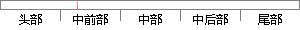

4、 既可以作为应用程序应用在网络环境中，也可以作为库嵌入到其他的语言中。
片段位置图

相似结果|
相似片段 1：查询速度。6)既可以作为一个单独的应用程序应用在客户端服务器网络环境中，也可以作为一个库而嵌入到其他的软件中。7)支持多种语言，常见的有：中文的GB2312编码、大五码BIG5；日文的ShiftJIS
|
※ 片段修改建议 ※
近似词参考：- 网络：收集
- 环境：情况
- 语言：说话
系统自动生成语句：4、 既可以作为应用程序应用在收集情况中，也可以作为库嵌入到其他的说话中。
注：本片段修改建议为系统自动生成，仅供参考。